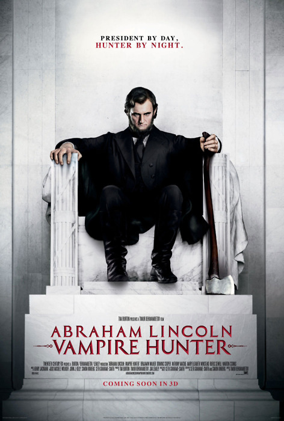

|

|

|
Year of Release: 2012
Cast: Benjamin Walker as Abraham Lincoln, Dominic Cooper as Henry Sturges,
Anthony Mackie as Will Johnson, Mary Elizabeth Winstead as Mary Todd Lincoln, Rufus Sewell
as Adam.
Key People Behind the Scenes: Directed by Timur Bekmambetov. Written by Seth
Grahame-Smith based on his book. Produced by Bekmambetov, Tim Burton, Derek Frey, John J.
Kelly, Simon Kinberg, Jim Lemley, Kathleen Switzer, and Michele Wolkoff.
Setting: Illinois, New Orleans, Washington, Virginia, and Gettysburg.
Plot Summary: Abraham Lincoln learns that evil vampires are behind some of the
nation's greatest problems--particularly slavery--and joins the fight to eliminate the
threat.
Point of View: Union.
Critics' Response: Largely negative. Most critics simply could not embrace the
premise, although those who did found the film to be fairly amusing.
Awards: None.
Historians' Response: Mostly a mix of bemused, tolerant, and otherwise nominally
positive responses. There is, in fact, an extensive scholarly literature on both gothic
fiction and on the use of vampires as metaphor. A few scholars found the film to be in
poor taste, arguing that it trivialized the people and/or issues of the Civil War.
Budget: $69,000,000.
Box Office Gross: $106,619,139.
Source: Christopher Bates for the History 139A website
|